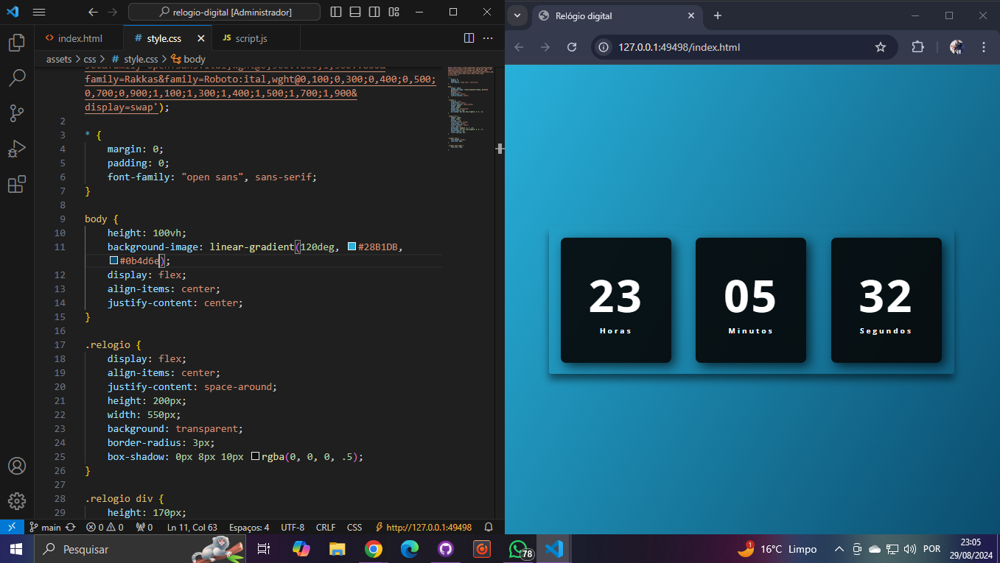
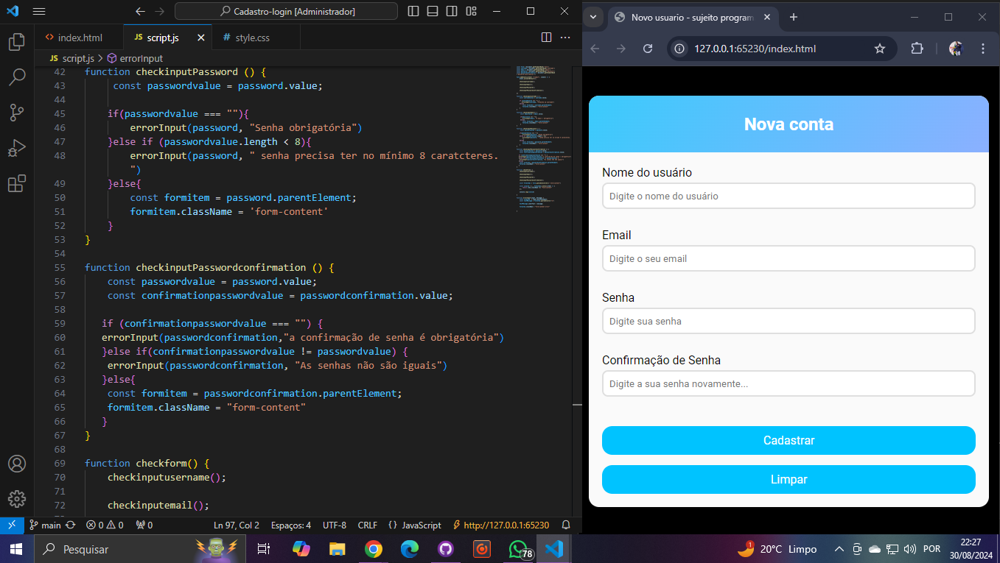

- Meu contato
- Meus Projetos
- Sobre mim
Front-End developer
Sou um Novo desenvolvedor web com vontade de aprender e desenvolver na área, aqui irei armazenar os meus pequenos projetos, para que possam dar uma olhada
Conhecimentos em
.png)
Meus projetos
Relógio digital
Este projeto apresenta um relógio digital interativo, desenvolvido utilizando as tecnologias HTML5, CSS3 e JavaScript. Ele exibe horas, minutos e segundos em tempo real, atualizados a cada segundo. O design é minimalista e responsivo, com uso de CSS3 para estilização moderna e JavaScript para a lógica de exibição do tempo. Este relógio digital é um ótimo exemplo de como integrar front-end e lógica de programação para criar componentes funcionais e esteticamente agradáveis na web
Clique aqui para acessar o projeto Clique aqui para acessar o projeto no GithubTela de login e senha
Neste projeto, desenvolvi uma interface de tela de login e cadastro utilizando HTML, CSS e JavaScript. A interface foi projetada para ser intuitiva e responsiva, garantindo uma experiência de usuário agradável em diferentes dispositivos. A funcionalidade principal do projeto inclui a validação de dados em tempo real, assegurando que o usuário preencha corretamente os campos de cadastro e login. Para a confirmação de cadastro, o projeto implementa uma verificação de correspondência de senha, garantindo a segurança dos dados inseridos. Além disso, o layout foi elaborado com técnicas de CSS modernas para oferecer um design limpo e profissional. Esse projeto demonstra minha habilidade em criar interfaces de usuário funcionais e seguras, com uma atenção especial à experiência do usuário e à integridade dos dados.
Clique aqui para acessar o projeto Clique aqui para acessar o projeto no Github